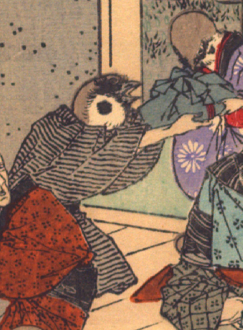

雀。茶色の縞柄の着物を着ている。袖から出ている腕は人間のものである。座って、青い風呂敷包を画面右側の雀に渡している。
出典：親書誌：U426_nichibunken_0109：Le moineau qui a la langue coupée／日付：2006／資源識別子：U426_nichibunken_0109_0003_0002
Copyright (c)2010- International Research Center for Japanese Studies, Kyoto, Japan. All rights reserved.